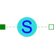

RelativeStatesDefinition of relative state variables |

|
Information
This information is part of the Modelica Standard Library maintained by the Modelica Association.
Usually, the absolute position and the absolute velocity of Modelica.Mechanics.Translational.Inertia models are used as state variables. In some circumstances, relative quantities are better suited, e.g., because it may be easier to supply initial values. In such cases, model RelativeStates allows the definition of state variables in the following way:
- Connect an instance of this model between two flange connectors.
- The relative position and the relative velocity between the two connectors are used as state variables.
An example is given in the next figure

Here, the relative position and the relative velocity between the two masses are used as state variables. Additionally, the simulator selects either the absolute position and absolute velocity of model mass1 or of model mass2 as state variables.
Parameters (1)
| stateSelect |
Value: StateSelect.prefer Type: StateSelect Description: Priority to use the relative angle and relative speed as states |
|---|